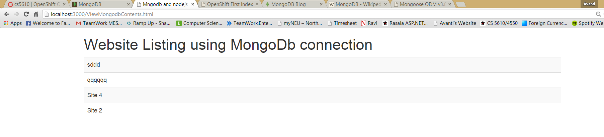

This link shows the output returned in json format
Click Here to see the Output

MongoDB (from humongous) is a cross-platform document-oriented database. Classified as a NoSQL database, MongoDB eschews the traditional table-based relational database structure in favor of JSON-like documents with dynamic schemas (MongoDB calls the format BSON), making the integration of data in certain types of applications easier and faster. Released under a combination of the GNU Affero General Public License and the Apache License, MongoDB is free and open-source software. In this experiment I have hosted a mongodb database on server which can be used to show the data into node JS webpage in the Open Shift.
Description :
Above code snippet will connect to the database named cs5610 with the help of the node module mongoose
Let's face it, writing MongoDB validation, casting and business logic boilerplate is a drag. That's why we have Mongoose.
Mongoose provides a straight-forward, schema-based solution to modeling application data and includes built-in type
casting, validation, query building, business logic hooks and more, out of the box.
More details about mongoose can be found on Mongoose